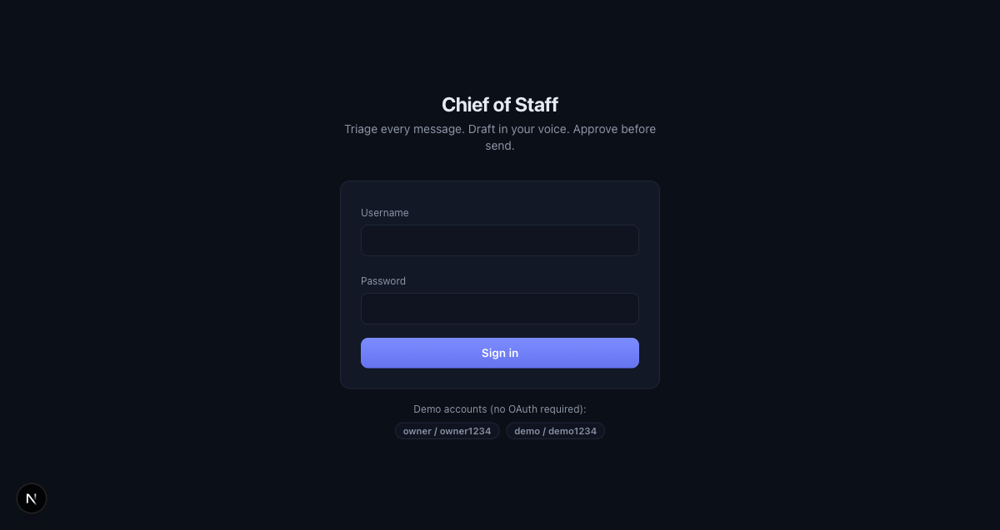
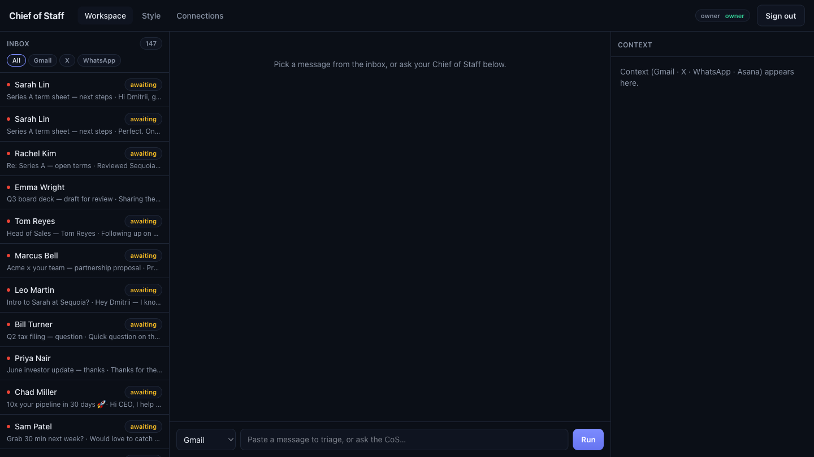
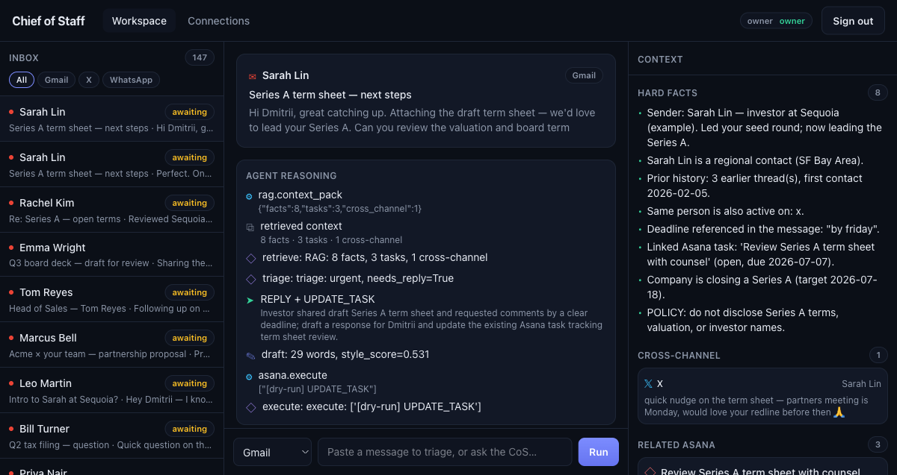
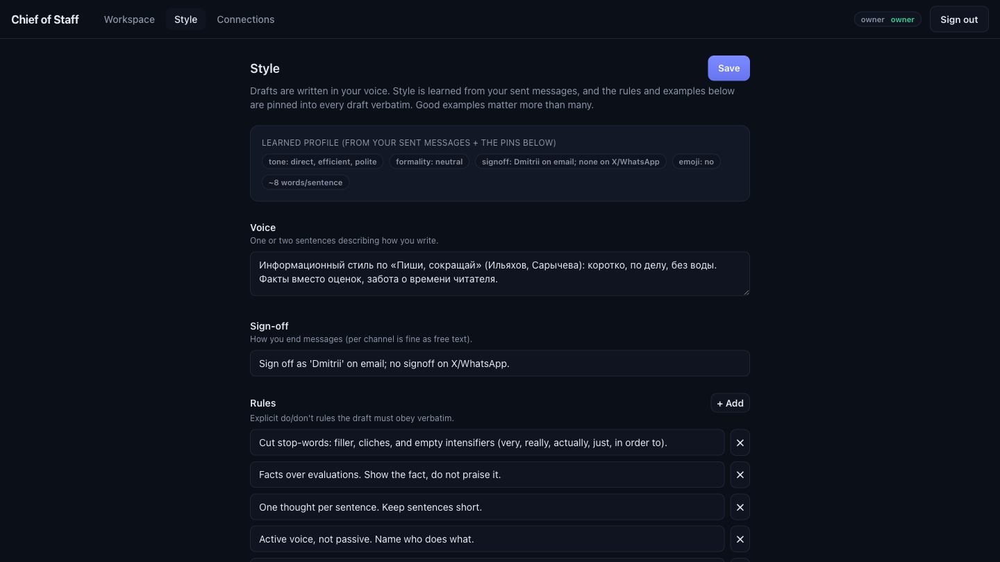
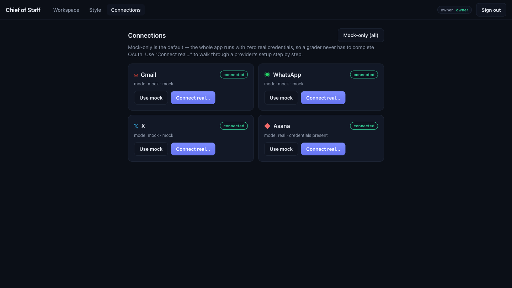

"A Chief of Staff agent. Every channel in, drafts in your voice, linked to Asana, nothing sends without approval. And it is live — this is the hosted URL."
Point at the URL bar (not localhost). Click owner / owner1234 and sign in.

"The week. 147 messages across Gmail, X, and WhatsApp — investors, board, a candidate, a customer escalation, press."
The inbox. Point at the 147 count, the channel filters, the red awaiting flags.

"Open the term sheet from Sarah Lin. It builds a context pack, triages urgent, and decides: reply and update the Asana task — grounded in real facts."
Click Sarah Lin. Point at Agent Reasoning (retrieve → triage → REPLY + UPDATE_TASK) and the Hard Facts panel (deadline, linked task, policy).

"The draft is in the exec's voice. Learned from sent mail, and I pin it explicitly — the «Пиши, сокращай» info-style. Short, facts over adjectives, no em dashes."
Open the Style page. Show the learned profile, Voice, and the pinned Rules. Then back to the draft.
"Nothing sends on its own. I approve — and that just wrote to my real Asana over the live API. Real data, not a mock."
Click Approve. Switch to the second tab on app.asana.com and refresh — the task shows the new comment.
Asana — real API
"Asana is real; the other channels are mock, so a grader never touches OAuth. Every channel is one connector interface. And the demo user is read-only — approve is blocked on the server."
Open Connections (Asana real, rest mock). Sign out, log in as demo / demo1234, try to approve — blocked.